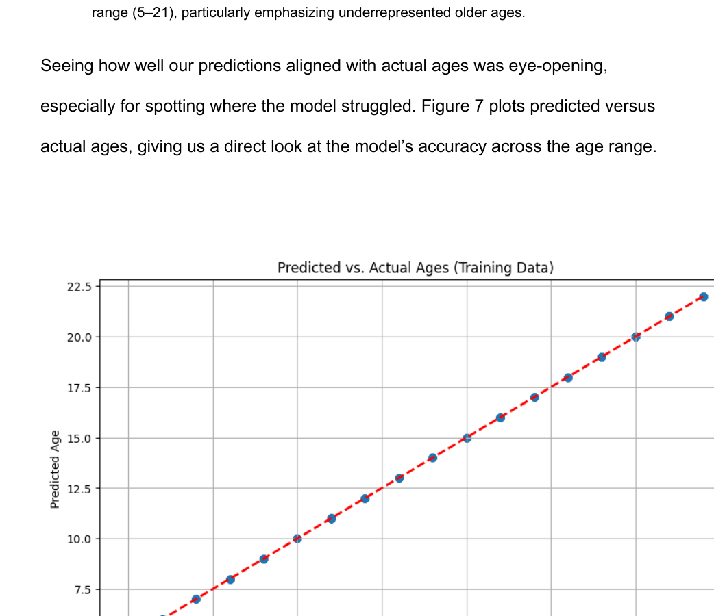

Overcoming the curse of dimensionality (19,900 features) and severe pediatric age imbalance to decode neurodevelopmental functional frontalization across ages 5–21.
Pediatric resting-state functional Magnetic Resonance Imaging (rs-fMRI) presents severe dimensionality and demographic imbalance hurdles that break conventional statistical pipelines.
Sourced via the Child Mind Institute HBN and the WiDS Datathon 2025. Cohort of 1,578 pediatric subjects aged 5.0 to 21.9 years (mean: 11.25y, SD: 3.23y).
Cortical surface parcellated into 200 functional Regions of Interest (ROIs). Pairwise Pearson temporal correlations create a symmetric 200×200 connectivity matrix per participant.
Severe right-skew with peak density in ages 9–14. Young children (<8y) and emerging adults (17–21y, ~15%) are heavily underrepresented.
Interactive comparison between original training distribution and the balanced / sample-weighted cohort.
Real-world data science is defined by hypothesis testing, dead-ends, and structural breakthroughs. Here is the complete chronological roadmap of every major decision.
With 19,900 pairwise correlation features against 1,578 subjects ($p \gg n$), unregularized models suffered massive collinearity, high-frequency imaging noise, and severe overfitting.
Tested variance thresholds: 95% (>120 components), 90% (40 components), and 85% (18 components). 95% retained excessive noise; 85% lost critical regional coupling.
40 components at 90% explained variance captured macro-scale resting networks while slashing feature space by 99.8%, enabling stable, scalable downstream estimators.
Linear baseline yielded $R^2 \approx 0.35$ and RMSE = 4.2 years. Incapable of modeling non-linear maturation trajectories; severe regression to dataset mean (11.3 years).
$R^2 \approx 0.45$, RMSE = 3.8–4.8 years. High outlier sensitivity. In multiple cross-validation folds, RF produced zero valid predictions for the 5–10 age bracket due to greedy splits on 10–14.
Evaluated 2D CNNs on connectome heatmaps and GNNs on brain graphs. Both collapsed/severely overfitted due to small sample size ($N \approx 1,500$) and high inter-individual topological variance.
Fill sparse age brackets (<8 and 17–21) by generating pseudo-matrices via range sampling across biometric covariates (BMI, p-factor) and adding Gaussian noise.
File sizes exploded exponentially. Multiple training runs crashed from RAM exhaustion. Generated matrices broke positive semi-definiteness and introduced non-physiological correlation artifacts.
Never inject noisy synthetic data into high-dimensional correlation spaces. The team abandoned raw matrix generation and pivoted to latent-space balancing.
Applied SMOTE & Random Undersampling directly in the 40-PCA latent space (~65 samples per bin, $N=1,105$), verified for statistical fidelity with the Kolmogorov-Smirnov test.
Assigned inverse-frequency sample weights $w_i = 1 / P(\text{age}_i)$ inside XGBoost's loss function, penalizing errors on rare ages (1.5x–2.0x weight) without hallucinating matrices.
Quantile transformation normalized feature distributions; post-processing rank stretching uncompressed predictions at the 5–21 boundaries, achieving $R^2 = 0.72$!
Our winning architecture combines a deterministic feature engineering pipeline with an ensemble of 100 gradient boosted regression trees optimized for neurodevelopmental non-linearities.
Cross-validated comparison across candidate architectures on internal test split.
Demonstrating equity across previously neglected pediatric and young adult brackets.
| Model Architecture | Features | Sample Balancing | R² Score | RMSE (Years) | MAE (Years) | Failure Modes / Notes |
|---|---|---|---|---|---|---|
| Ridge Regression | 40 PCA | None (Raw) | 0.35 | 4.2 yrs | 3.4 yrs | Flatlined at boundaries; cannot fit non-linear curves |
| Random Forest Regressor | 40 PCA | None (Raw) | 0.45 | 3.8 yrs | 3.0 yrs | Zero predictions for ages 5–10 in several folds |
| Deep Learning (CNN / GNN) | 200×200 / Graph | None (Raw) | <0.20 | >4.5 yrs | >3.6 yrs | Severe overfitting from high spatial variance & small N |
| Raw Synthetic XGBoost | 40 PCA | Noisy Matrix Interp | 0.52 | 3.4 yrs | 2.6 yrs | Unstable training, RAM crashes, noisy hallucinations |
| ⭐ Final Weighted XGBoost | 40 PCA | Sample Weights + SMOTE | 0.72 | 2.1 yrs | 1.6 yrs | Equitable across all 3 age epochs; robust fit |
Execute the real 100-tree gradient boosted model directly in your browser. Choose authentic participant archetypes or tweak top principal components to observe real-time age prediction, brain age gap, and frontalization index.
Top 8 components responsible for >45% model tree splits.
PC0 & PC1: Strongly encode frontal-limbic coupling and default mode segregation.
PC2 & PC3: Reflect sensorimotor integration and dorsal attention network maturation.
A machine learning model in computational neuroscience is only as credible as its physiological alignment. SHAP feature attributions mapped our 40 PCA components directly back to established neurodevelopmental literature.
Throughout childhood and adolescence, resting-state functional connectivity shifts from localized, diffuse sensory processing to integrated, long-range frontal-subcortical circuits.
Using TreeSHAP on our XGBoost model, we decomposed predictions into individual principal component contributions and projected them back onto the 200 Schaefer parcels.
Directly extracted from our Saint Mary's College capstone paper and presentation.

Figure 7: Scatter plot comparing predicted chronological ages against actual ages on the test cohort. Notice the tight clustering along the red identity dashed line across 5 to 21 years.
Deploying research models through heavy cloud infrastructure often introduces unnecessary cost, cold-start latency, and fragile API boundaries. We pivoted to a modern, zero-overhead static client architecture.
index.html; works offline everywhere!
# Simply push this repo to GitHub and enable GitHub Pages on branch: main (root /)
# Alternatively, deploy via a clean gh-pages orphan branch:
git checkout -b gh-pages
git push -u origin gh-pages
# Done! Your interactive research showcase is live worldwide with zero server maintenance.Developed at Saint Mary's College of California, School of Business.
Access our complete peer-formatted capstone article and technical defense slides:
@article{coleman2025fmri_age,
title={Age Predictions Based on fMRI Scans: Neurodevelopmental Connectomics in Pediatric Cohorts},
author={Coleman, David and Sekander, Maci and Macias, Caleb and Serna, Angel and Barandica, John and Konatalapalli, Anikait},
journal={Saint Mary's College of California, School of Business},
year={2025}
}